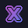

~test3/audio/file.ogg
[PAUSED]
Lena Raine - Farewell.ogg
00:00
~/changelog
Web Changelog - v3.0.0
[+] Added:
- reproductor de audio cli interactivo en JS con autoplay al primer click
- fondo dinamico neon con movimiento de grilla y un glow redondo
- efecto retro scanlines crt restaurado a pantalla completa
- seccion de bienvenida estilo consola interactiva
[~] Changed:
- limpieza integral y reestructuracion de todo el archivo style.css
- rework del mensaje de agradecimiento y mencion a @JEEM244
[-] Fixed:
- fix de espacio en blanco excesivo en la terminal de creditos
- remocion de selectores css duplicados y codigo muerto
// REDES SOCIALES
// GAMING PROFILES
~/games/osu
Osu!
Cuenta de Osu!
~/games/fluxis
fluXis

Cuenta de fluXis
~/games/steam
Steam

Cuenta de Steam
// ACTIVITY MONITOR
~/rich-presence
ACTIVIDAD
~/github-activity
Actividad en Github
~/credits/acknowledgements
commit a1b2c3d
special thanks: especial agradecimiento a mis amigos por
segundearme revisando esta web de mierda <3
(Gracias Nabd,
Matero y
Capy)
commit e4f5g6h
acknowledgements: un reconocimiento y disculpa a @JEEM244 por haberse tomado el tiempo de hacer un fork y proponer un reestructurado completo. Aunque prefiero mantener este proyecto como un espacio propio, aprecio un monton la iniciativa y la ayuda <3